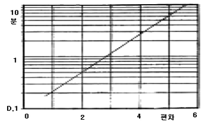
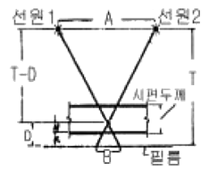
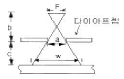
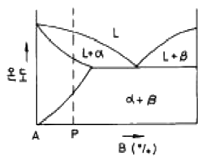
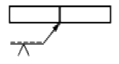

방사선비파괴검사기사(구) (2005-03-20 기출문제)
1과목: 방사선투과시험원리
1. 자동현상제에는 감광유제의 부풀음(Swelling)을 조절하기 위하여 경화제를 사용한다. 다음 중 경화제에 해당하는 것은?
- 글루터알데히드(gluteraldehyde)
- 페니돈(phenidone)
- 하이드로 퀴논(hydroquinone)
- 물(water)
(정답률: 알수없음)

2. 방사선 투과사진상의 콘트라스트를 줄이기 위한 방법은?
- 선원과 물체간의 거리를 증가시킨다.
- 선원과 물체간의 거리를 감소시킨다.
- 사용하는 선원에서 방출되는 방사선의 파장을 감소시킨다.
- X선 발생장치의 관전압을 감소시킨다.
(정답률: 알수없음)
3. 방사성 동위원소를 이용한 방사선투과시험에서 선원의 크기가 작은 선원이 명료한 투과상을 얻을 수 있다. 선원의 크기가 작아지려면 다음 중 무엇이 커야 하는가?
- 반감기
- 방사능의 강도
- 비방사능
- 감마선의 에너지
(정답률: 알수없음)
4. 실초점(focal spot)으로부터 발산되는 방사선의 강도는 그 각도에 따라 다르다. 이것은 어떤 효과에 기인한 것인가?
- Heel효과
- 광전효과
- Compton효과
- 쌍전자 생성효과
(정답률: 알수없음)
5. X선 발생장치에서 관전압을 높일수록 다음 중 어떤 현상이 발생되는가?
- 파장이 짧아진다.
- 파장이 길어진다.
- 파장의 변화가 없다.
- 파장은 역자승에 비례한다.
(정답률: 알수없음)
6. 라미네이션의 검사에 가장 효과적인 비파괴검사법은?
- 방사선투과검사
- 자분탐상검사
- 초음파탐상검사
- 와류탐상검사
(정답률: 알수없음)
7. TLD에 사용하는 열형광물질이 아닌 것은?
- LiF
- CaSO4
- CaF2 + Mg
- NaI
(정답률: 알수없음)
8. 높은 투과사진 콘트라스트를 얻기 위해 가능한 한 작아지도록 촬영조건을 선택해야 하는 것은?
- 선 흡수계수
- 기하학적 보정계수
- 산란비
- 필름콘트라스트
(정답률: 알수없음)
9. 방사선투과시험시 주어진 농도를 얻는데 필요한 선량은 조사방사선의 파장에 크게 의존된다. 다음 중 농도 1.0을 얻는데 가장 많은 선량이 필요한 관전압[kVp]은?
- 1000kVp
- 400kVp
- 200kVp
- 100kVp
(정답률: 알수없음)
10. 다음은 방사성동위원소등을 이동사용하는 경우의 기술기준에 대한 설명이다. 틀린 것은?
- 방사선작업은 2인 이상을 1조로 편성하여 작업을 수행한다.
- 감마선 조사장치를 사용하는 경우에는 콜리메터를 장착하고 사용한다.
- 사용을 폐지한 선원은 폐기함에 넣어 일시적 사용장소에 보관한다.
- 원격조작장치·집게 등을 사용하여 방사성동위원소와 인체 사이에 적당한 거리가 확보되도록 한다.
(정답률: 알수없음)
11. X선 투과사진 촬영시에 식별도가 좋은 사진을 찍으려면 다음 중 어느 방법이 가장 좋은가?
- 관전압을 낮게 하고 노출시간을 길게 한다.
- 관전압을 높게 하고 노출시간을 짧게 한다.
- 관전류를 크게 하고 노출시간을 짧게 한다.
- 관전압과 관전류를 증가시킨다.
(정답률: 알수없음)
12. 방사성 동위원소의 측정에 사용되는 용어의 정의로 틀린 것은?
- 큐리(Ci)는 방사능의 강도를 나타내는 단위로, 라듐 1g의 방사능은 1Ci이다.
- 반감기(half-life)는 방사선 강도를 처음 값의 반으로 줄이는데 필요한 물질의 두께를 말한다.
- 비방사능은 방사성 동위원소를 포함하고 있는 물질의 단위 질량당의 방사능을 말한다.
- 방사능의 강도는 SI단위로 Bq가 사용되며, 1Bq는 1dps이다.
(정답률: 알수없음)
13. 다음 중 물질의 열중성자 흡수와 관련이 없는 것은?
- 탄성산란
- 비탄성산란
- 열중성자의 포획
- 전자쌍생성
(정답률: 알수없음)
14. X선 필름의 필름특성곡선에서 사진농도 2.10일 때 노출량 4mA × 52s, 사진농도 1.90일 때 노출량 4mA × 44s였다면 이 두 농도 사이의 평균 필름 콘트라스트는?
- 0.25
- 1.60
- 2.76
- 3.62
(정답률: 알수없음)
15. 방사선투과사진의 관찰에 가장 영향을 적게 미치는 것은?
- 관찰실의 밝기
- 관찰기의 밝기
- 관찰자의 시력
- 필름의 규정 농도
(정답률: 알수없음)
16. 다음 중 피사체 콘트라스트에 영향을 미치지 않는 것은?
- 시험체의 두께차
- 방사선 선질
- 산란방사선
- 투과도계
(정답률: 알수없음)
17. Ir-192 100Ci의 방사성 동위원소가 있다. 이 동위원소가 10반감기가 지난 후에는 처음 강도의 몇 %가 되겠는가?
- 약 0.1%
- 약 0.2%
- 약 1%
- 약 2%
(정답률: 알수없음)
18. 비파괴검사의 장점이 아닌 것은?
- 전수 검사가 용이하다.
- 검사재에 동시에 여러가지 검사법을 사용할 수 있다.
- 검사는 흔히 숙련된 기술자가 수행하여야 한다.
- 파괴하지 않고 검사할 수 있다.
(정답률: 알수없음)
19. 방사선 투과사진에서 점상, 선상 또는 수지상으로 흑화된 정전기마크가 발생하는 것을 방지하기 위한 방법을 설명한 것으로 틀린 것은?
- 암실, 보관함 등의 누설 광선을 검사한다.
- 암실 및 취급 장소의 습도를 조정한다.
- 접지시켜 정전기를 제거한다.
- 정전기 발생이 쉬운 고무, 화학섬유의 사용을 피한다.
(정답률: 알수없음)
20. 다음 중 중성자 방사선투과시험의 감속재(moderator)로 널리 쓰이는 것은?
- 베릴륨
- 구리
- 납
- 우라늄
(정답률: 알수없음)
2과목: 방사선투과검사
21. 자동 방사선투과검사(Autoradiography)에서 밀봉되지 아니한 핵연료봉에 대한 방사성 물질의 농도 검사시 시편과 필름사이에 두께가 균일하지 않은 재질을 사용하면 어떤 결과가 나타나는가?
- 미시방사선(micro-radiograph) 투과사진
- 전자방사선(electron radiograph) 투과사진
- 섬광방사선(flash radiograph) 투과사진
- 중성자방사선(neutron radiograph) 투과사진
(정답률: 알수없음)
22. 방사선투과검사로 다음 중 검출하기 어려운 불연속은?
- 기공
- 언더컷
- 라미네이션
- 용입불량
(정답률: 알수없음)
23. 다음 중 산란선을 감소시키기 위한 방법이 아닌 것은?
- 마스크 적용
- 무스크린 적용
- 다이아프램 적용
- 필터 적용
(정답률: 알수없음)
24. 후방산란 X선으로부터 필름을 보호하기 위한 적절한 조치는?
- 필름 카세트 후면에 납판을 받친다.
- 필름 카세트 후면에 나무판을 받친다.
- 필름과 시험체사이에 마스크를 끼운다.
- 방사선원 가까이 필터(filter)를 끼운다.
(정답률: 알수없음)
25. 두께 20mm의 알루미늄 용접부를 192Ir로 촬영하고자 한다. 강(steel)에 대한 노출도표에서 읽어야 할 시험재의 두께(mm)는 얼마인가? (단, 알루미늄의 강에 대한 등가계수는 0.35이다.)
- 7.0
- 13.0
- 20.35
- 27.15
(정답률: 알수없음)
26. 다음 중 방사선투과사진의 명료도(definition)를 좋게 하기 위한 방법에 속하지 않는 것은?
- 형광증감지를 사용한다.
- 산란 방사선을 방지한다.
- 선원의 크기가 작은 것을 사용한다.
- 선원-필름간 거리를 가급적 크게 한다.
(정답률: 알수없음)
27. 양극의 표적면은 어떤 각도로 기울어져 있어 전자의 충격을 받는 부위에 비해 방사방향의 표적의 크기가 작게 된다. 이를 무엇이라 하는가?
- 실제 초점
- 유효 초점
- 전자빔 단면적
- 경사 초점
(정답률: 알수없음)
28. 계조계의 1차적 사용 목적을 바르게 설명한 것은?
- 투과사진의 콘트라스트를 조사하기 위하여 사용된다.
- 투과사진의 명료도를 조사하기 위하여 사용된다.
- 투과사진의 감도를 조사하기 위하여 사용된다.
- 투과사진의 식별도를 조사하기 위하여 사용된다.
(정답률: 알수없음)
29. X선 발생 장치의 올바른 유지 관리법이 아닌 것은?
- X선관에 과부하가 걸리지 않도록 휴지시간(Duty cycle)을 초과하여 사용한다.
- 적절한 예열로 열충격을 피한다.
- 장시간 사용하지 않은 장비는 예열 시간을 길게 한다.
- X선 발생 장치의 사용율을 높이기 위해 양극을 충분히 냉각시킨다.
(정답률: 알수없음)
30. 방사선을 이용하여 방사선투과 사진을 촬영하는 원리와 관계가 먼 것은?
- 방사선은 직진한다.
- 방사선은 필름을 감광시킨다.
- 방사선은 시험편을 투과한다.
- 방사선은 시험편에서 산란한다.
(정답률: 알수없음)
31. 방사선발생장치에서 X선 관전압을 높이면?
- 파장이 짧고, 투과력이 강한 X선을 발생한다.
- 파장이 길고, 투과력이 강한 X선을 발생한다.
- 파장이 길고, 투과력이 약한 X선을 발생한다.
- 파장이 짧고, 투과력이 약한 X선을 발생한다.
(정답률: 알수없음)
32. 방사선투과검사에서 명료도(Definition)에 영향을 미치지 않는 것은?
- 증감지-필름 접촉상태
- 필름의 종류
- 증감지의 종류
- 관전류
(정답률: 알수없음)
33. 방사선 조사시 시험체에 의해 나타나는 산란선을 무엇이라 하는가?
- 전방산란
- 측방산란
- 후방산란
- 언더컷
(정답률: 알수없음)
34. 다음 중 방사선 투과사진의 선명도에 영향을 미치는 인자가 아닌 것은?
- 기하학적인 촬영 조건
- 사용된 필름의 입도
- 산란 방사선
- 노출시간
(정답률: 알수없음)
35. 투과사진의 농도가 3.0인 것은 2.0인 것과 비교할 때 필름관찰기의 밝기가 일정할 경우 눈에 들어오는 투과광의 밝기는 어떻게 변하는가?
- 0.5배로 약해진다.
- 1.5배로 강해진다.
- 0.1배로 약해진다.
- 10배로 강해진다.
(정답률: 알수없음)
36. 투과사진 필름 농도가 D1일 때 결함상의 농도가 D2인 경우 이 결함을 인지할 수 있느냐 없느냐 하는 것이 존재하는 결함에 의한 농도차 D2-D1(즉 투과사진의 농도차 △D)와 결함의 존재를 인지할 수 있는 최소 농도차(즉 식별한계 콘트라스트 △Dmin)의 대소 관계에 의해 결정된다. 다음 중 결함이 식별 가능한 경우는?
- |△D| ≥ |△Dmin |
- | △D| ＜ |△Dmin|
- |△D| ≤ |△Dmin|
- | △D| - |△Dmin| ＜ 10
(정답률: 알수없음)
37. 다음 중 방사선투과검사에 사용되는 Ir-192 선원의 붕괴곡선(decay chart)표 상에 표기되어 있지 않은 것은?
- 선원의 크기
- 선원의 제조일
- 현상조건
- 선원의 강도
(정답률: 알수없음)
38. 도표는 철강에 대한 2.5MeV Van de graff의 노출선도로서 기준농도는 2.0이고, 가로축은 두께, 세로축은 노출시간이다. 어떤 2인치 두께의 철강 시험체를 X선 투과촬영시 사진농도만 2.5로 높이고자 할 때 노출시간은 얼마나 주어야 하는가? (단, 특성곡선에서 농도 2.5와 2.0과의 차에 해당하는 log E는 0.3 이며, 100.3은 2이다.)

- 0.25분
- 0.5분
- 1분
- 2분
(정답률: 알수없음)
39. 다음 중 방사선투과검사시 증감지(screen)를 사용하지 않아도 좋은 경우는?
- 고에너지의 방사선을 사용할 때
- 산란선에 의한 불필요한 감광을 무시할 때
- 노출시간을 단축하고자 할 때
- 저전압의 X선을 사용할 때(100kVP 이하)
(정답률: 알수없음)
40. 방사선투과검사에 의한 결함 깊이 측정법에서 파라렉스법(Parallax Method)의 기본 원리도에 의한 공식은?

- D = BT / (A + B)
- D = (A + B) / BT
- D = BT / (A – B)
- D = (B + T) / (A – B)
(정답률: 알수없음)
3과목: 방사선안전관리,관련규격및컴퓨터활용
41. 그림과 같이 선원의 크기(F)가 3mm, a = 60mm, b = 120mm, c = 100mm라면 이 때 시편에서의 빔폭(w)은?

- 112.5mm
- 128.5mm
- 133.5mm
- 141.5mm
(정답률: 알수없음)
42. KS B 0845에 따라 강판 맞대기 용접이음부의 방사선투과시험을 위한 촬영준비로 틀린 것은?
- 투과사진은 시험부를 투과하는 두께가 최대가 되는 방향으로 방사선을 조사한다.
- 투과도계의 선은 용접부와 직각이 되게하여 용접 위에 걸쳐 촬영한다.
- 투과도계의 가는 선이 바깥을 향하도록 하여 촬영한다.
- 계조계는 시험부 유효 길이의 중앙 부근 용접부와 인접한 모재부에 둔다.
(정답률: 알수없음)
43. ASME Sec.V Art.2에 의하여 흑화도계로 방사선 투과사진의 흑화도를 측정할 경우 교정된 필름(Film Strip)과의 허용오차는 얼마까지 인정하는가?
- 0.01 H&D
- 0.02 H&D
- 0.⑤ H&D
- 0.1 H&D
(정답률: 알수없음)
44. 방사성 동위원소의 사용허가 신청시 첨부되는 서류로 틀린 것은?
- 원자력법 시행규칙의 규정에 의한 방사선안전 보고서
- 원자력법 시행규칙의 규정에 의한 안전관리규정
- 원자력법 시행령의 규정에 의한 장비구입 입증 서류
- 원자력법 시행령의 규정에 의한 사고 발생시 대처할 의료기관 지정 서류
(정답률: 알수없음)
45. KS B 0845에 규정된 25형 계조계의 두께는 4.0mm이다. 이 때 두께의 치수 허용차는 어떻게 규정하고 있는가?
- ±1%
- ±5%
- ±10%
- ±15%
(정답률: 알수없음)
46. 다음 중 장해방어조치 및 보고와 관련하여 과학기술부장관에게 보고하여야 할 사항에 포함되지 않는 내용은?
- 방사성물질을 운반하는 도중 발생한 가벼운 접촉사고
- 방사선장해를 받을 우려가 있는 자에 대한 긴급조치
- 방사성물질 등에 의하여 오염이 발생한 경우의 조치
- 방사선 긴급작업을 하는 경우 과학기술부장관이 정하는 기준 이상의 방사선피폭의 방지
(정답률: 알수없음)
47. KS B 0845에서 흠의 종류 중 용접 이음부의 강도 저하에 미치는 영향을 나타낸 것 중 틀린 것은?
- 둥글기를 띤 블로홀은 단면적의 감소
- 용입불량은 응력 집중
- 파이프는 응력집중
- 갈라짐은 단면적의 감소
(정답률: 알수없음)
48. ASME Sec.Ⅴ에서 X선 투과사진 농도의 허용 범위는? (단, 단일 필름시)
- 최소 1.8 ~ 최대 4.0
- 최소 1.0 ~ 최대 5.0
- 최소 0.5 ~ 최대 3.0
- 최소 2.0 ~ 최대 4.0
(정답률: 알수없음)
49. 내부 피폭 예방의 3원칙에 해당하지 않는 것은?
- 거리를 멀리 잡을 것
- 피폭의 원천을 만들지 말 것
- 섭취의 경로를 막을 것
- 섭취시 빨리 제거할 것
(정답률: 알수없음)
50. 기체의 전리작용에 의한 전하의 방전을 이용하여 개인 피폭량을 측정하는 기기는?
- 형광유리 선량계
- 필름뱃지
- 포켓선량계
- 열루미네센스 선량계
(정답률: 알수없음)
51. KS B 0845에 따라 모재 두께가 10㎜이고, 투과 두께를 측정하기 곤란한 경우 한쪽 덧붙임이 있는 강용접부의 평판 맞대기 이음에 적용할 계조계는?
- 15형
- D10형
- S형
- P1형
(정답률: 알수없음)
52. 일반인의 손이나 발에 대한 방사선의 연간 등가선량한도는?
- 50mSv
- 150mSv
- 300mSv
- 750mSv
(정답률: 알수없음)
53. 방사선 서베이미터의 지시값이 0.9R/h이었을 때 그 위치에서 20분 동안의 피폭 선량은?
- 18R
- 2.4R
- 0.4R
- 0.3R
(정답률: 알수없음)
54. AWS D1.1(2001년판)의 방사선투과검사 판정규정에 대한 설명으로 옳은 것은?
- 합격기준을 만족시키지 못하는 것으로 판명된 경우 제품을 폐기하여야 한다.
- 정적 하중을 받는 비튜브 연결부에 대한 개재물은 그 길이를 측정하여 등급분류하고 합부판정을 결정해야 한다.
- 필름에 보이는 결함은 불연속의 종류를 균열, 개재물, 기공, 텅스텐개재, 융합불량, 용입불량으로 분류한다.
- 원형 형상처럼 보이더라도 그 꼬리를 갖고 있어 그 길이가 폭의 3배를 초과하면 선형 불연속이다.
(정답률: 알수없음)
55. KS B 0845에서 모재 두께가 25㎜, 투과 두께 30㎜인 경우 제1종 결함에 대한 시험 시야는?
- 10㎜×10㎜
- 15㎜×15㎜
- 10㎜×20㎜
- 10㎜×30㎜
(정답률: 알수없음)
56. 인터넷 전자우편이나 채팅 그리고 메시지를 뉴스그룹 등에 올릴 때, 글의 내용을 보충하기 위해 키보드 글자나 부호들의 짧은 나열을 이용하여, 보통 얼굴표정을 흉내내거나 느낌을 나타내기 위한 것은 무엇인가?
- emoticon
- icon
- banner
- prompt
(정답률: 알수없음)
57. 거리에 관계없이 자료발생 즉시 처리하는 양방향 통신 기능을 가진 정보처리 방식은?
- 온라인(On-Line) 처리
- 일괄(Batch) 처리
- 원격 일괄(Remote batch) 처리
- 분산 자료 처리(distributed data processing)
(정답률: 알수없음)
58. 인터넷에서 다른 문서와 연결할 수 있도록 작성된 문서를 무엇이라 하는가?
- 멀티미디어
- 하이퍼미디어
- 하이퍼텍스트
- 멀티텍스트
(정답률: 알수없음)
59. CPU가 입출력 인터페이스의 상태를 일일이 검사하여 직접 입출력을 제어하는 방식은?
- DMA
- programmed I/O
- interrupt driven I/O
- channel controled I/O
(정답률: 알수없음)
60. 인터넷에서 사용하는 문서 중 성격상 서로 다른 것은?
- HTML
- SGML
- TCL
- XML
(정답률: 알수없음)
4과목: 금속재료학
61. 2개의 금속이 광범위한 조성에 걸쳐 치환형 고용체가 형성되기 위한 조건을 바르게 설명한 것은?
- 원자 반경의 차이가 약 45% 이하
- 비슷한 원자밀도
- 비슷한 자유에너지
- 비슷한 원자가
(정답률: 알수없음)
62. 탄소강에서 인(P)의 영향 중 틀린 것은?
- Fe3P를 형성하며 입자의 조대화를 촉진한다.
- 인(P)의 악 영향은 탄소량이 증가하면 감소한다.
- 상온 취성의 원인이 된다.
- Fe3P는 MnS 또는 MnO와 ghost line을 형성한다.
(정답률: 알수없음)
63. 중성자를 잘 통과 시키므로 원자로 연료의 피복제, 중성자의 반사제나 원자핵 분열기에 이용되는 금속은?
- Ge
- Be
- Si
- Te
(정답률: 알수없음)
64. 질화강의 주요 합금원소가 아닌 것은?
- Al
- Cr
- Si
- Mo
(정답률: 알수없음)
65. 알루미늄합금의 제조시 과열(overheating)을 피해야 하는 이유로 적합하지 않는 것은?
- 과열을 받은 합금은 응고할 때 천천히 냉각됨으로서 최대한 결정립이 생성되기 때문이다.
- 고온에서의 알루미늄은 수증기와 반응하여 산화 알루미늄 (Al2O3)을 생성하기 때문이다.
- 고온에서의 알루미늄은 수증기와 반응하여 수소(H2)를 생성하기 때문이다.
- 과열을 받은 합금은 주조성이 떨어지기 때문이다.
(정답률: 알수없음)
66. 냉간가공한 황동을 풀림했을 때의 재결정 입도 미세화에 대한 설명 중 맞는 것은?
- 재결정 입도는 온도가 높고 가공도가 클수록 조대해진다.
- 재결정 입도는 온도가 높고 가공도가 클수록 미세해진다.
- 재결정 입도는 온도가 낮고 가공도가 클수록 조대해진다.
- 재결정 입도는 온도가 낮고 가공도가 클수록 미세해진다.
(정답률: 알수없음)
67. Al합금의 종류 중 Al-Si계 합금에 대한 설명으로 옳지 않은 것은?
- 고용체에 의해 시효경화를 이용하여 경도를 증대한 대표적인 Al합금이다.
- 평형상태에서 Al에 Si가 고용될 수 있는 한계는 공정온도인 577℃에서 약 1.65%이다.
- 용융상태에서 유동성이 높으며 응고중의 주입성이 우수하고 열간취성이 비교적 없다.
- AA알루미늄 식별부호 중 4XXX에 해당하며 우수한 주조 특성 때문에 상업적으로 많이 사용되는 합금이다.
(정답률: 알수없음)
68. 용융금속이 응고된 후 형성된 등축정 조직에 대한 설명이 틀린 것은?
- 주물의 수축공 내면 등에서 잘 발달하며 나무 가지 모양의 결정을 말한다.
- 결정립이 여러 방향을 향하고 있으므로 조직이 균일하다.
- 기계적 성질이 우수하고, 응고할 때 발생하는 결함의 형성을 줄일 수 있다.
- 응고조직은 측면에서 기계적 특성상 등축정 조직 부분 비중이 높은 것이 좋다.
(정답률: 알수없음)
69. 0.2% 탄소강의 723℃ 선상에서 오스테나이트의 양(%)은?
- 약 23%
- 약 40%
- 약 67%
- 약 80%
(정답률: 알수없음)
70. 다음 중 비정질 합금의 제조 방법이 아닌 것은?
- 기체 급냉법
- 액체 급냉법
- 고체 침탄법
- 전기 또는 화학 도금법
(정답률: 알수없음)
71. 탄소강에 나타나는 조직 중 연성이 가장 풍부한 것은?
- 페라이트(Ferrite)
- 마텐자이트(Martensite)
- 투루스타이트(Troostite)
- 베이나이트(Bainite)
(정답률: 알수없음)
72. 강의 Martensite 조직이 경도가 큰 이유가 될 수 없는 것은?
- 탄소에 의한 Fe의 격자강화
- 급냉으로 인한 내부응력 존재
- 확산 변태에 의한 Pearlite의 분리
- 쌍정형성 및 입자 미세화에 의한 전위이동 억제
(정답률: 알수없음)
73. 결정 입계의 특성에 대해 바르게 설명한 것은?
- 결정입계 에너지 때문에 결정립이 성장하거나 이동할 수 있다.
- 결정입계의 밀도는 높은 온도에서 더욱 증가하려는 경향이 있다.
- 결정입계는 결정입내보다 치밀한 원자구조를 갖는다.
- 결정입계는 전위의 이동을 방해하지 않는다.
(정답률: 알수없음)
74. 다음 중 알루미늄의 특성이 아닌 것은?
- 상온에서 판, 선재로 압연가공하면 경도와 인장강도가 증가하고 연신율이 감소한다.
- 구리에 비해 산과 알칼리에 대한 부식저항이 더 크다.
- 산화피막이 형성되어 내식성이 강하다.
- 융점이 낮아 용해가 용이하고 용접성이 우수하다.
(정답률: 알수없음)
75. 다음 중 내마모성을 주목적으로 하는 특수강은?
- Ni-Cr 강
- 고 Mn 강
- Cr 강
- Cr-Mo 강
(정답률: 알수없음)
76. α-황동을 냉간 가공하여 재결정 온도 이하의 낮은 온도로 풀림을 하면 가공 상태보다 더욱 경도가 증가되는 현상은?
- 시효 경화
- 석출 경화
- 경년 변화
- 저온 풀림 경화
(정답률: 알수없음)
77. 티타늄과 티타늄합금의 특성 중 틀린 것은?
- 무게에 비해 높은 강도를 갖는다.
- 높은 내식성을 갖는다.
- 약 550℃ 까지 높은 온도 물성이 좋다.
- O2, N2, H2, C같은 침입형 원소와 반응성, 친화성이 작기 때문에 가공성이 나쁘다.
(정답률: 알수없음)
78. 합금강 재료의 마텐자이트 변태 개시 온도(Ms)를 낮게 하는 가장 큰 요인은?
- 탄소 함량의 증가
- 코발트 함량의 증가
- 결정입도의 조대화
- 소성가공
(정답률: 알수없음)
79. 그림의 상태도는 어떠한 상변태를 하는 합금을 나타낸 것인가?

- 동소 변태형 합금
- 공석 변태형 합금
- 석출 경화형 합금
- 전율 고용체형 합금
(정답률: 알수없음)
80. Mg 및 그 합금의 특징에 대한 설명 중 가장 관계가 먼 것은?
- 실용재료로서 가장 가벼운 금속이다.
- 비강도(比强度)가 커서 휴대용 기기나 항공우주용 재료로서 매우 유리하다.
- 주조시의 생산성이 나쁘며, 내식성은 고순도의 경우 나쁘고 저순도의 경우 매우 좋다. 따라서 피막처리가 필요 없다.
- 고온에서는 매우 활성이고, 분말이나 절삭설은 발화의 위험이 있다.
(정답률: 알수없음)
5과목: 용접일반
81. 레이저 용접의 특징에 대한 설명으로 틀린 것은?
- 열의 영향범위가 넓어 잔류응력이 크다.
- 광선이 용접의 열원이다.
- 열의 영향범위가 좁다.
- 원격 조작이 용이하다.
(정답률: 알수없음)
82. 용접전류가 180A, 전압이 15V, 속도가 18 cm/min 일 때, 용접길이 1cm당 용접입열(heat input)은 몇 Joule인가?
- 9000
- 150
- 48600
- 2.5
(정답률: 알수없음)
83. 용접부가 급냉되었을 때, 나타나는 현상 설명으로 틀린 것은?
- 연신율 저하
- 용접부의 취화
- 내균열성 향상
- 열영향부의 경화
(정답률: 알수없음)
84. 아크전압 30V, 아크전류 300A, 무부하전압이 80V인 용접기의 역률(power factor)은 얼마인가? (단, 내부 손실은 4 kW 이다)
- 48%
- 54%
- 68%
- 86%
(정답률: 알수없음)
85. 아세틸렌가스와 접촉하면 폭발성 화합물을 생성하는 금속은?
- 강
- 주철
- 동
- 알루미늄
(정답률: 알수없음)
86. 가스절단작업에서 다음 가스 중 예열 연소시 산소를 가장 많이 필요로 하는 가스는 ?
- 프로판
- 부탄
- 에틸렌
- 아세틸렌
(정답률: 알수없음)
87. 다음 중 비용극식 용접법은?
- 이산화탄소 아크용접
- 서브머지드 아크용접
- 일렉트로 가스용접
- 불활성가스 텅스텐 아크용접
(정답률: 알수없음)
88. 다음의 용접 결함 중에서 치수상 결함에 해당하는 것은?
- 스트레인 변형
- 용접부 융합불량
- 기공
- 용접부 접합불량
(정답률: 알수없음)
89. 용접이 끝나는 종점부분에서 아크를 짧게 천천히 운봉하며 다시 용접봉을 뒤로 보내 재빨리 아크를 끊는 방법과 가장 관계 있는 것은?
- 덧붙이의 처리방법
- 용접 슬래그 처리방법
- 언더컷의 처리방법
- 크레이터의 처리방법
(정답률: 알수없음)
90. 일렉트로 슬래그 용접의 장·단점 설명으로 틀린 것은?
- 박판용접에는 적용할 수 없다.
- 최소한의 변형과 최단시간의 용접법이다.
- 용접 진행 중 용접부를 직접 관찰할 수 있다.
- 아크가 눈에 보이지 않고 아크 불꽃이 없다.
(정답률: 알수없음)
91. 피복 금속 아크용접기에는 발전형과 정류형이 있다. 발전형에 비교한 정류형의 특징 설명으로 틀린 것은?
- 소음이 적다.
- 취급이 쉽고 가격이 싸다.
- 보수나 점검이 간단하다.
- 옥외 현장 사용시에 편리하다.
(정답률: 알수없음)
92. 아크용접기의 정격 2차전류가 400A이고 정격사용율이 40% 이면 300A로 용접전류를 사용하여 용접할 경우 이 용접기의 허용 사용율은 약 몇 % 인가?
- 71%
- 80%
- 88%
- 91%
(정답률: 알수없음)
93. 산소창(Oxygen lance)절단을 가장 적합하게 설명한 것은?
- 수중의 기포발생을 적게하여 작업을 용이하게 하기 위하여 보통 산소 수소염을 이용한다.
- 미세한 철분이나 알루미늄 분말을 소량 배합하고 첨가제를 혼합하여 건조공기 또는 질소를 절단부에 연속적으로 공급절단하는 방법이다.
- 내경 φ3.2∼6mm, 길이 1.5∼3m 정도의 파이프를 사용하여 파이프 자체가 연소하면서 절단하는 방법이다.
- 스테인레스강의 절단을 주목적으로 한 것이며, 중탄산 소다를 주성분으로 용제 분말을 송급하여 절단하는 방법이다.
(정답률: 알수없음)
94. 다음 중 용접의 장점이 아닌 것은?
- 재료가 절약되고 중량이 가벼워진다.
- 두께의 제한이 없다.
- 작업의 자동화가 쉽다.
- 잔류응력이 존재한다.
(정답률: 알수없음)
95. 자체 생성되는 화학 반응열을 이용하여 금속을 용접하는 용접법은?
- 스터드 용접법
- 테르밋 용접법
- 초음파 용접법
- 고주파 용접법
(정답률: 알수없음)
96. 티그 용접시 모재의 용입이 가장 깊어지는 경우는?
- He가스로 DCRP일 때
- He가스로 DCSP일 때
- Ar가스로 DCRP일 때
- Ar가스로 DCSP일 때
(정답률: 알수없음)
97. 다층(multi-layer)용접시 전층의 용접 경화부에 대하여 후 속층의 용접열로 조직 개선 효과를 줄 수 있는 것은 다음 중 어느 효과에 의하여 가능한가?
- 뜨임(tempering)
- 담금질(quenching)
- 풀림(annealing)
- 불림(normalizing)
(정답률: 알수없음)
98. 보기와 같은 용접 도시기호가 의미하는 것은?

- 화살표측에 V홈 용접
- 화살표의 반대측에 V홈 용접
- 판의 양쪽에 X홈 용접
- 판의 양쪽에 V홈 용접
(정답률: 알수없음)
99. 아크용접에 비교한 가스용접의 설명으로 틀린 것은?
- 아크용접에 비해서 유해 광선의 발생이 적다.
- 아크용접에 비해서 불꽃 온도가 높다.
- 열 집중성이 나빠서 효율적인 용접이 어렵다.
- 폭발 위험성이 크고 금속이 탄화 및 산화될 가능성이 많다.
(정답률: 알수없음)
100. 한 개의 용접봉으로 살을 붙일만한 길이로 구분해서 홈을 한 부분씩 여러 층으로 쌓아올린 다음 다른 부분으로 진행하는 방법은?
- 스킵법
- 덧살 올림법
- 캐스케이드법
- 전진 블록법
(정답률: 알수없음)